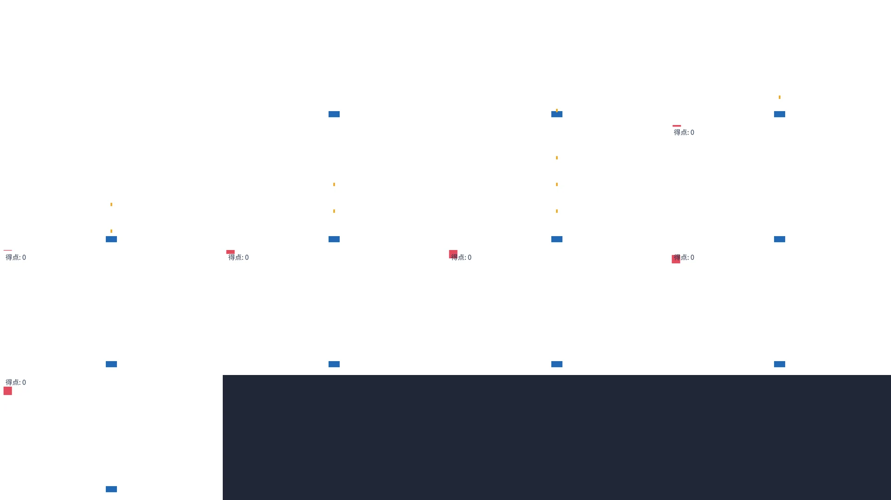
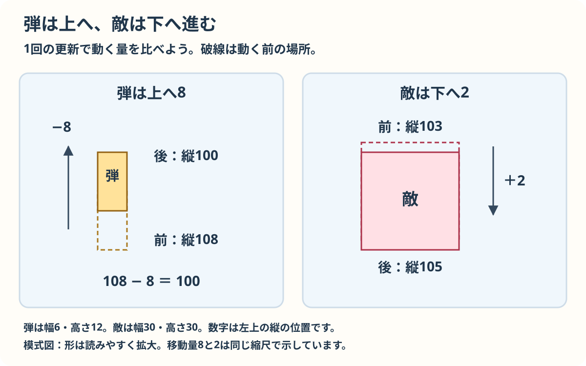
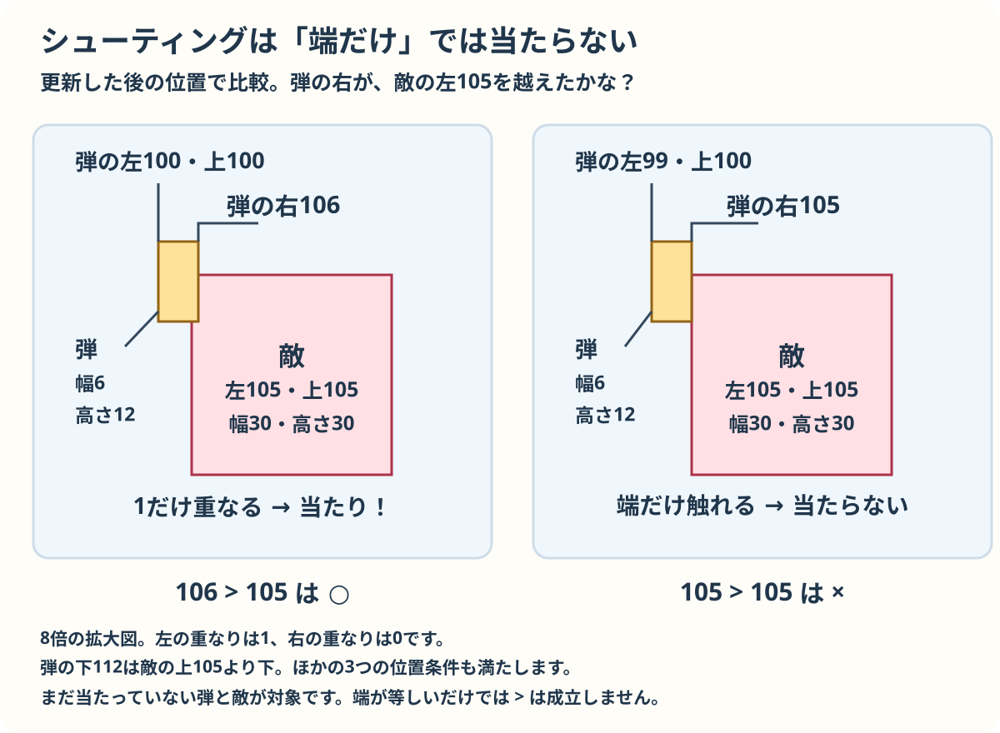

シンプルなシューティング
中級者向け
変数、if 文、配列、繰り返し、キー操作を知っている人向けです。「ブロックくずし」の後がおすすめです。 弾と敵の配列、出現間隔、四角形同士の当たり判定を学びます。
左右の矢印キーで移動し、スペースキーで弾を撃ちます。敵が下端に着いたら終了です。R キーで再挑戦できます。
始める前に
ZIPを展開してできたフォルダーでindex.htmlを開きます。ZIPにはひな型の3ファイルが入っています。
WindowsでZIPを展開する（動画）
3つのファイルは同じフォルダーに入っています。
各ステップでは作業用フォルダーの script.js を開き、示した部分を順番に置き換えます。index.html と style.css は変更しません。保存したら作業用の index.html をブラウザで開き、すでに開いている場合は再読み込みしてください。見本は別のページで開けます。
start() は最初の設定、update() は動きや判定、draw() は描画を担当します。最後の gameLoop() は更新と描画を繰り返します。
ステップ 1：自機を動かす
このステップの見本を図で見る
playerX = 380、幅40
自機は画面の中央付近
playerX = 380 + 6 = 386
右へ6px動く
Math.min(800 - 40, 758 + 6) = 760
画面幅800からはみ出さない
ゲーム画面とコードの前後を見る

このステップの見本
この行を足す前 変わったコードの一例（script.js）
const playerY = 400, playerWidth = 40;
見本で確かめること
左右の矢印キーで青い自機が動くことを確かめます。
保存してゲーム画面を更新する（動画）
index.html を再読み込みします。目標
目標：自機を左右に動かします。
確認欄までは準備中です。作業を順に進め、確認欄で保存して動作を確かめます。
書く場所と置き換えるコード
自機の位置とキーの状態を用意する
作業用フォルダーの script.js で、次の範囲を探して置き換えます。
置き換える範囲
"use strict";
const canvas = document.querySelector("#game-canvas");
const ctx = canvas.getContext("2d");
置き換えるコード
"use strict";
const canvas = document.querySelector("#game-canvas");
const ctx = canvas.getContext("2d");
let playerX, left = false, right = false;
const playerY = 400, playerWidth = 40;
変数は値に名前を付けて覚えるものです。playerX は自機の左端、playerY は上端、playerWidth は幅です。left と right はキーの状態を覚えます。
自機を中央から始める
作業用フォルダーの script.js で、次の目印を探し、その直後に書きます。
目印
function start() {
書き足すコード
playerX = 380; left = false; right = false;
= は右の値を左に入れ、; は文の区切りです。左端を380に置き、左右キーを押していない状態にします。
左右に動かす
作業用フォルダーの script.js で、次の目印を探し、その直後に書きます。
目印
function update() {
書き足すコード
if (left) playerX -= 6;
if (right) playerX += 6;
playerX = Math.max(0, Math.min(canvas.width - playerWidth, playerX));
左右キーに応じて横位置を6ずつ変え、Math.max() と Math.min() で画面内に収めます。
自機を描く
作業用フォルダーの script.js で、次の目印を探し、その直後に書きます。
目印
ctx.clearRect(0, 0, canvas.width, canvas.height);
書き足すコード
ctx.fillStyle = "#2269b4";
ctx.fillRect(playerX, playerY, playerWidth, 22);
ctx はひな型の描画の道具、fillStyle は色です。左上と幅40、高さ22を指定して四角を描きます。
押したキーを覚える
作業用フォルダーの script.js で、次の目印を探し、その直前に書きます。
目印
function gameLoop()書き足すコード
window.addEventListener("keydown", (event) => {
if (event.key === "ArrowLeft" || event.key === "ArrowRight") event.preventDefault();
if (event.key === "ArrowLeft") left = true;
if (event.key === "ArrowRight") right = true;
});
左右の矢印キーを押したら対応する状態を true にします。preventDefault() はブラウザーの標準動作を止めます。
離したキーを戻す
作業用フォルダーの script.js で、次の目印を探し、その直前に書きます。
目印
function gameLoop()書き足すコード
window.addEventListener("keyup", (event) => {
if (event.key === "ArrowLeft") left = false;
if (event.key === "ArrowRight") right = false;
});
keyup で対応する状態を false に戻します。
画面から離れたときに戻す
作業用フォルダーの script.js で、次の目印を探し、その直前に書きます。
目印
function gameLoop()書き足すコード
window.addEventListener("blur", () => { left = false; right = false; });
blur で両方を false にし、キーの押しっぱなしが残らないようにします。
保存後の確かめ方
左右の矢印キーで青い自機が動くことを確かめます。 ステップ 1 の見本を開く
小さな練習
移動量 6 を変えて速さを比べます。 練習後はこのステップのコードに戻してから次へ進んでください。
ステップ 2：弾を撃つ
このステップの見本を図で見る
このステップの見本
この行を足す前 変わったコードの一例（script.js）
if (cooldown > 0) cooldown--;
見本で確かめること
スペースキーを押し続けると弾が間隔をあけて上へ進むことを確かめます。
目標
目標：スペースキーで弾を出します。
確認欄までは準備中です。作業を順に進め、確認欄で保存して動作を確かめます。
書く場所と置き換えるコード
弾と発射の状態を用意する
作業用フォルダーの script.js で、次の目印を探し、その直後に書きます。
目印
const playerY = 400, playerWidth = 40;
書き足すコード
let bullets, firing = false, cooldown;
bullets は弾の配列、firing は発射中か、cooldown は次の発射までの待ちです。
弾と待ち時間を初期化する
作業用フォルダーの script.js で、次の目印を探し、その直後に書きます。
目印
playerX = 380; left = false; right = false;
書き足すコード
bullets = []; firing = false; cooldown = 0;
弾を空にし、発射を止めて待ち時間を0にします。
弾を発射して進める
作業用フォルダーの script.js で、次の目印を探し、その直後に書きます。
目印
playerX = Math.max(0, Math.min(canvas.width - playerWidth, playerX));
書き足すコード
if (cooldown > 0) cooldown--;
if (firing && cooldown === 0) {
bullets.push({ x: playerX + playerWidth / 2 - 3, y: playerY });
cooldown = 12;
}
for (const bullet of bullets) bullet.y -= 8;
bullets = bullets.filter((bullet) => bullet.y + 12 >= 0);
待ち時間が0なら自機の中央から弾を追加し、12回の更新を待ちます。各弾の y を8減らして上へ進め、画面の上へ出た弾を除きます。

1回の更新で弾は bullet.y -= 8。次のステップで加える敵は enemy.y += 2 です。Canvas は下に進むほど y が大きくなります。弾は幅6・高さ12、敵は幅30・高さ30です。絵の大きさは見やすくしています。
弾を描く
作業用フォルダーの script.js で、次の目印を探し、その直後に書きます。
目印
ctx.fillRect(playerX, playerY, playerWidth, 22);
書き足すコード
ctx.fillStyle = "#edaa27";
for (const bullet of bullets) ctx.fillRect(bullet.x, bullet.y, 6, 12);
各弾を幅6、高さ12の四角で描きます。
Space で発射する
作業用フォルダーの script.js で、次の目印を探し、その直後に書きます。
目印
window.addEventListener("blur", () => { left = false; right = false; });
書き足すコード
window.addEventListener("keydown", (event) => {
if (event.code === "Space") { event.preventDefault(); firing = true; }
});
window.addEventListener("keyup", (event) => {
if (event.code === "Space") firing = false;
});
window.addEventListener("blur", () => { firing = false; });
Space を押すと firing を真にし、離すか画面から離れると偽に戻します。
保存後の確かめ方
スペースキーを押し続けると弾が間隔をあけて上へ進むことを確かめます。 ステップ 2 の見本を開く
小さな練習
cooldown の 12 を変えて弾の間隔を比べます。 練習後はこのステップのコードに戻してから次へ進んでください。
ステップ 3：敵と当たり判定を加える
このステップの見本を図で見る
このステップの見本
この行を足す前 変わったコードの一例（script.js）
if (!bullet.hit && !enemy.hit && bullet.x < enemy.x + 30 &&
見本で確かめること
敵に弾が当たると両方が消え、得点が増えます。
目標
目標：敵を一定の間隔で出し、弾が当たったら消します。
確認欄までは準備中です。作業を順に進め、確認欄で保存して動作を確かめます。
書く場所と置き換えるコード
敵と得点を覚える
作業用フォルダーの script.js で、次の範囲を探して置き換えます。
置き換える範囲
let bullets, firing = false, cooldown;
置き換えるコード
let bullets, firing = false, cooldown, enemies, spawnTimer, score, state;
enemies は敵の配列、spawnTimer は次の出現まで、score は得点、state は状態です。
敵と得点を初期化する
作業用フォルダーの script.js で、次の目印を探し、その直後に書きます。
目印
bullets = []; firing = false; cooldown = 0;
書き足すコード
enemies = []; spawnTimer = 0; score = 0; state = "playing";
敵を空にし、タイマーと得点を0、状態をプレイ中にします。
プレイ中だけ更新する
作業用フォルダーの script.js で、次の目印を探し、その直後に書きます。
目印
function update() {
書き足すコード
if (state !== "playing") return;
state がプレイ中でなければ return で更新を終えます。
敵を出して下へ動かす
作業用フォルダーの script.js で、次の目印を探し、その直後に書きます。
目印
bullets = bullets.filter((bullet) => bullet.y + 12 >= 0);
書き足すコード
spawnTimer--;
if (spawnTimer <= 0) {
enemies.push({ x: Math.random() * (canvas.width - 30), y: -30 });
spawnTimer = 60;
}
for (const enemy of enemies) enemy.y += 2;
タイマーが0以下になると幅30の敵を上から追加し、60回の更新を待ちます。各敵の縦位置を2増やして下へ動かします。
弾と敵の重なりを調べる
作業用フォルダーの script.js で、次の目印を探し、その直後に書きます。
目印
spawnTimer--;
if (spawnTimer <= 0) {
enemies.push({ x: Math.random() * (canvas.width - 30), y: -30 });
spawnTimer = 60;
}
for (const enemy of enemies) enemy.y += 2;
書き足すコード
for (const bullet of bullets) {
for (const enemy of enemies) {
if (!bullet.hit && !enemy.hit && bullet.x < enemy.x + 30 &&
bullet.x + 6 > enemy.x && bullet.y < enemy.y + 30 && bullet.y + 12 > enemy.y) {
bullet.hit = true; enemy.hit = true; score++;
}
}
}
弾と敵の上下左右が重なり、どちらも未命中なら両方に hit を付け、得点を1増やします。
命中した物を除き、下端を調べる
作業用フォルダーの script.js で、次の目印を探し、その直後に書きます。
目印
for (const bullet of bullets) {
for (const enemy of enemies) {
if (!bullet.hit && !enemy.hit && bullet.x < enemy.x + 30 &&
bullet.x + 6 > enemy.x && bullet.y < enemy.y + 30 && bullet.y + 12 > enemy.y) {
bullet.hit = true; enemy.hit = true; score++;
}
}
}
書き足すコード
bullets = bullets.filter((bullet) => !bullet.hit);
enemies = enemies.filter((enemy) => !enemy.hit);
if (enemies.some((enemy) => enemy.y + 30 >= canvas.height)) state = "over";
filter() で命中した弾と敵を除きます。some() で敵の下端が画面に届いたか調べ、届けば終了します。

説明用の例です。更新後の敵は左上 (105, 105)。弾の y は100で、左の絵は x が100、右の絵は99です。幅と位置の比は実際の値に合わせています。
弾の右端は x が100なら106、99なら105。bullet.x + 6 > enemy.x は等しいと成り立ちません。ほかに bullet.x < enemy.x + 30、bullet.y < enemy.y + 30、bullet.y + 12 > enemy.y、!bullet.hit、!enemy.hit も必要です。
敵と得点を描く
作業用フォルダーの script.js で、次の目印を探し、その直後に書きます。
目印
for (const bullet of bullets) ctx.fillRect(bullet.x, bullet.y, 6, 12);
書き足すコード
ctx.fillStyle = "#e34b5f";
for (const enemy of enemies) ctx.fillRect(enemy.x, enemy.y, 30, 30);
ctx.fillStyle = "#26334a"; ctx.font = "24px sans-serif";
ctx.fillText("得点: " + score, 20, 35);
if (state === "over") ctx.fillText("ゲームオーバー！ R キーでもう一度", 180, 225);
敵を30×30で描き、得点と終了時の案内を表示します。font は文字の大きさと書体です。
R キーでやり直す
作業用フォルダーの script.js で、次の目印を探し、その直後に書きます。
目印
window.addEventListener("blur", () => { firing = false; });
書き足すコード
window.addEventListener("keydown", (event) => {
if (event.key.toLowerCase() === "r") start();
});
R が押されたら start() を呼び、敵と得点を含む状態を作り直します。
保存後の確かめ方
敵に弾が当たると両方が消え、得点が増えます。敵を見逃すと終了し、R で再開します。 ステップ 3 の見本を開く
小さな練習
spawnTimer の 60 を変えて敵の出る間隔を比べます。 練習後はこのステップのコードに戻してから次へ進んでください。